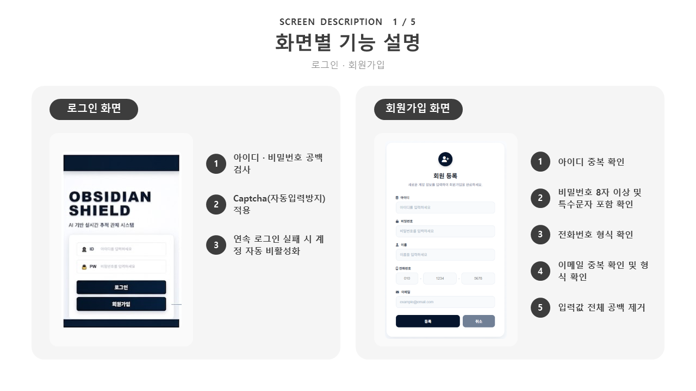
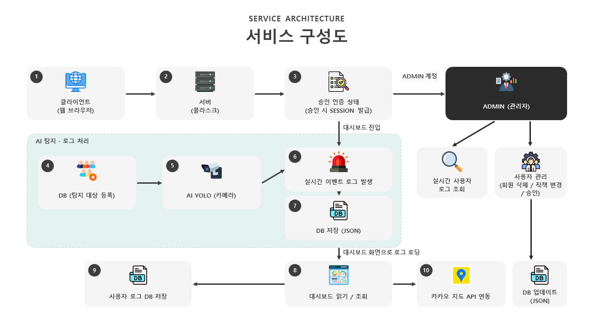

1차 팀 프로젝트 · 딱코 · 2026.06.25 ~ 07.24
사람을 찾고, 동선을 그립니다
드론·CCTV 영상에서 사람을 탐지(YOLO)하고, 같은 사람을 따라가며(BoT-SORT), 등록된 얼굴과 비교(InsightFace)해 실종자·수배자 같은 주의 인물이 발견되면 지도 위에 동선을 그려 알려주는 실시간 관제 시스템입니다.
- Python 3.12
- Flask
- YOLOv8n
- BoT-SORT
- InsightFace
- OpenCV
- SSE
- 카카오맵 API
실행하면 이런 화면이 나와요
MAIN SCREEN · 왼쪽 메뉴를 눌러 보세요※ 실제 Obsidian Shield 프로그램을 실행해 가져온 화면입니다(대시보드·실시간·탐지 대상·카메라·지도·이벤트 로그·사용자 관리). 왼쪽 메뉴를 눌러 볼 수 있어요. 탐지 대상·이벤트는 시연용 가상 데이터이고, 개인이 식별되는 얼굴·영상은 쓰지 않았습니다. 지도는 인터넷 연결이 필요하며, AI 탐지·영상 스트림은 모델을 실행하지 않아 비어 있습니다.
탐지부터 알림까지
PIPELINE- 영상 입력
- →
- YOLO 사람 탐지
- →
- BoT-SORT 추적
- →
- InsightFace 식별
- →
- 지도 표시 · 경고 · 로그
세 모델 모두 재학습 없이 사전 학습 가중치를 사용하고, 탐지 조건(conf 0.4, 사람만)·카메라별 추적기·유사도 기준 0.45만 조정했습니다.
핵심 기능
KEY FEATURES실시간 관제
카메라(CCTV·드론) 등록·상태 확인·다중 전환. Flask 영상 스트리밍 위에 탐지 박스를 표시합니다.
탐지 대상 관리
실종자·수배자 사진과 정보를 등록. 여러 장의 얼굴 특징을 평균 내어 저장해, 사진 몇 장만으로 바로 반영(Zero-delay)합니다.
이벤트·알림
발견 시각·위치·캡처를 이벤트 로그로 저장하고 SSE로 실시간 알림. 읽음 처리, 엑셀 다운로드, 열람 기록(사용자 로그).
동선 지도
카카오맵에 탐지 위치 마커와 사람별 이동 경로를 표시해 대상의 움직임을 한눈에 봅니다.
회원·보안
관리자 승인 후 로그인, 관리자/관제자 권한 분리, CAPTCHA, 연속 3회 실패 시 계정 비활성화, 최초 로그인 시 비밀번호 변경.
경량형 설계
가벼운 YOLOv8n으로 고성능 하드웨어 의존을 줄이고, 얼굴 인식을 비동기로 처리해 영상 지연을 줄였습니다.
실제 구현 화면
SCREENSHOTS
